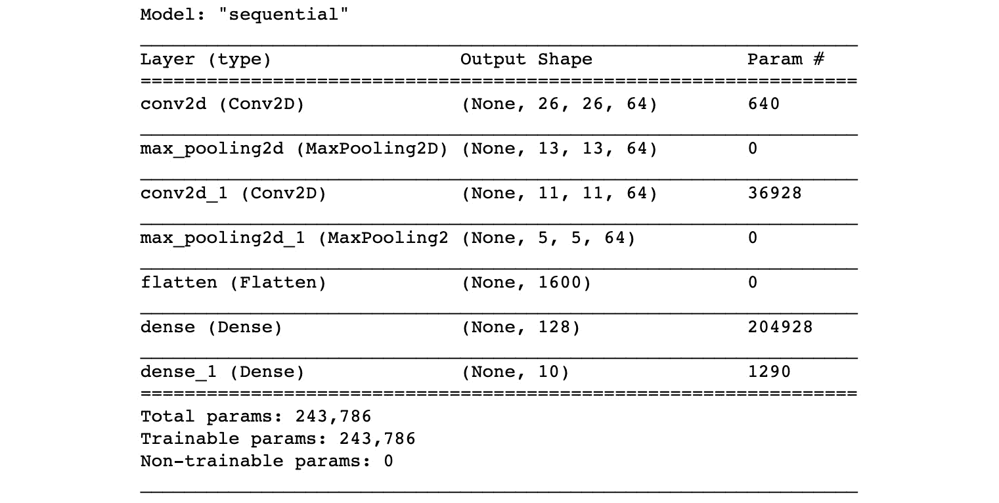
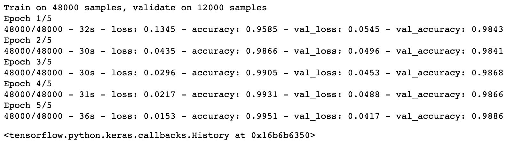
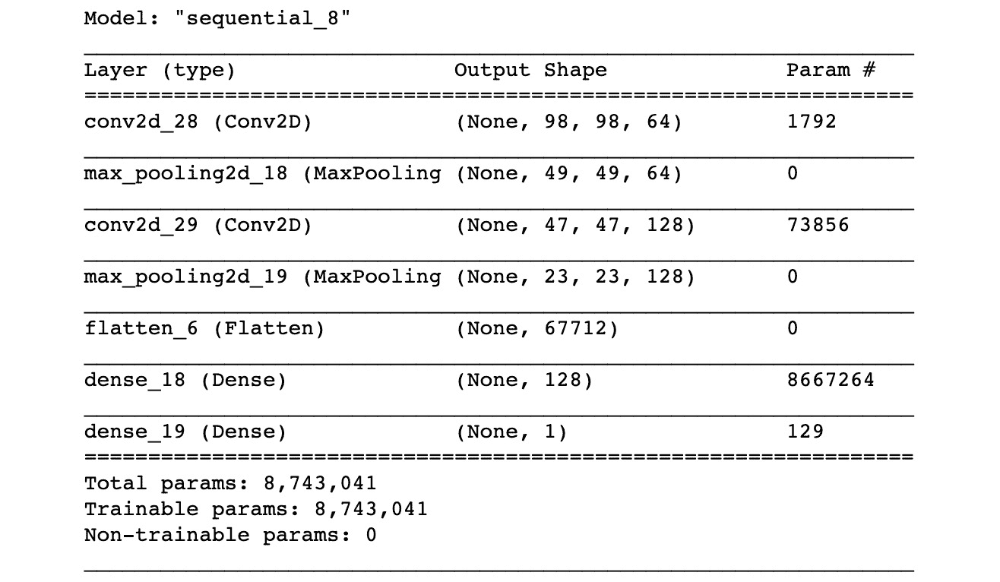
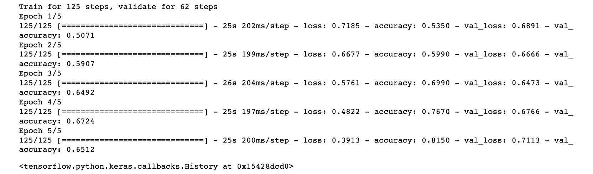
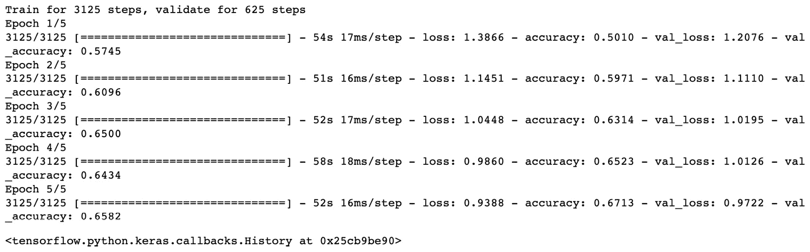

本章我们将学习卷积神经网络(CNN)和图像分类。首先，我们将介绍CNN的架构以及如何实现它们。然后，我们将获得使用TensorFlow开发图像分类器的实践经验。最后，我们将讨论迁移学习和微调的概念，并看看我们如何使用最先进的算法。
到本章结束时，你将很好地理解什么是CNN以及如何用TensorFlow编程。
简介
在前几章中，我们学习了传统的神经网络和一些模型，比如感知器。我们学习了如何在结构化数据上训练这种模型，以达到回归或分类的目的。现在，我们将学习如何将它们的应用扩展到计算机视觉领域。
不久前，计算机被视为只能处理明确定义的逻辑任务的计算引擎。另一方面，人类更复杂，因为我们有五种基本的感官帮助我们看东西、听声音、感觉事物、品尝食物和闻气味。计算机只是可以进行大量逻辑运算的计算器，但它们不能处理复杂的数据。与人类的能力相比，计算机有非常明显的局限性。
曾经有过一些初步的尝试，试图通过处理和分析数字图像给计算机带来视觉。这个领域叫做计算机视觉。但是直到深度学习的出现，我们才看到了一些不可思议的改进和成果。如今，计算机视觉领域已经发展到这样的程度，在某些情况下，计算机视觉人工智能系统能够比人类更快、更准确地处理和解释某些类型的图像。你可能听说过一个实验，在这个实验中，中国的15名医生与BioMind AI公司的深度学习系统竞争，从X射线中识别脑肿瘤。人工智能系统花了15分钟准确预测了225幅输入图像中的87%，而医学专家花了30分钟在同一批图像上取得了66%的分数。
我们都听说过可以根据交通状况自动做出正确决定的自动驾驶汽车，或者可以检测鲨鱼并自动向救生员发出警报的无人机。多亏了最近CNN的发展，所有这些惊人的应用都成为可能。
计算机视觉可以分为四个不同的领域:
- 图像分类，这里我们需要识别图像中的主要物体。
- 图像分类和定位，我们需要识别和定位图像中带有边框的主要物体。
- 物体检测，我们需要用边界框来识别图像中的多个物体。
- 图像分割，这里我们需要识别图像中物体的边界。
下图显示了四个域之间的差异:
图3.1:计算机视觉的四个领域之间的区别
在这一章中，我们将只看图像分类，这是CNN最广泛的应用。这包括汽车牌照识别、用手机拍摄的照片的自动分类，或者在图像数据库上创建搜索引擎使用的元数据。
注意
如果你正在阅读这本书的印刷版，你可以通过访问以下链接下载并浏览本章中一些图片的彩色版本:【https://packt.live/2ZUu5G2
数字图像
人类可以通过他们的眼睛将光转换成电信号，然后由大脑处理。但是计算机没有捕捉光线的眼睛。它们只能处理由位(0或1)组成的数字形式的信息。因此，为了能够“看见”，计算机需要图像的数字化版本。
数字图像由二维像素矩阵形成。对于灰度图像，这些像素中的每一个都可以取0到255之间的值，表示其灰度或灰度级。数字图像可以由黑白图像的一个通道或彩色图像的三个通道(红色、蓝色和绿色)组成:
图3.2:图像的数字表示
数字图像的特征在于其尺寸(高度、宽度和通道):
- 高度:垂直轴上有多少像素。
- 宽度:横轴上有多少像素。
- 通道:有多少个通道。如果只有一个通道，图像将是灰度的。如果有三个通道，图像将被着色。
以下数字图像的尺寸为(512，512，3)。
图3.3:数字图像的尺寸
Ima ge加工
现在我们知道了数字图像是如何表示的，让我们来讨论计算机如何使用这些信息来寻找将用于分类图像或定位对象的模式。因此，为了从图像中获得任何有用或可操作的信息，计算机必须将图像解析为可识别或已知的模式。至于任何机器学习算法，计算机视觉需要一些特征来学习模式。
与结构化数据不同，在结构化数据中，每个特征都预先定义好并存储在单独的列中，图像不遵循任何特定的模式。例如，不可能说第三行将总是包含一只动物的眼睛，或者左下角将总是代表一个红色的圆形物体。图像可以是任何东西，不遵循任何结构。这就是它们被视为非结构化数据的原因。
然而，图像确实包含特征。它们包含不同的形状(线条、圆形、矩形等)、颜色(红色、蓝色、橙色、黄色等)，以及与不同类型的对象(头发、轮子、树叶等)相关的特定特征。我们的眼睛和大脑可以很容易地分析和解释所有这些特征，并识别图像中的对象。因此，我们需要为计算机模拟同样的分析过程。这就是图像过滤器(也称为内核)发挥作用的地方。
图像过滤器是专门用于检测特定模式的小型矩阵。例如，我们可以用一个滤波器只检测垂直线，用另一个滤波器只检测水平线。计算机视觉系统在图像的每个部分运行这种过滤器，并生成新的图像，突出显示检测到的图案。这类生成的图像被称为特征图。下图显示了使用边缘检测过滤器的特征图示例:
图3.4:垂直边缘特征图示例
这种滤波器广泛用于图像处理。如果你以前使用过Adobe Photoshop(或任何其他图像处理工具)，你很可能使用过滤镜，如高斯和锐化。
Conv 解决方案操作
现在我们知道了图像处理的基本知识，我们可以从CNN开始我们的旅程。正如我们之前提到的，计算机视觉依赖于对图像应用过滤器来识别不同的模式或特征并生成特征图。但是这些滤镜是如何应用到图像的像素上的呢？你可能会猜测这背后有某种数学运算，你绝对是对的。这个操作叫做卷积。
卷积运算由两个阶段组成:
- 两个矩阵的元素乘积
- 矩阵元素的和
让我们看一个如何卷积两个矩阵A和B的例子:
图3.5:矩阵示例
首先，我们需要对矩阵A和b执行元素级乘法，我们将得到另一个矩阵C，其值如下:
- 第一行第一列:5 × 1 = 5
- 第一行第二列:10 × 0 = 0
- 第一行第三列:15 × (-1) = -15
- 第2行第1列:10 × 2 = 20
- 第2行第2列:20 × 0 = 0
- 第2行第3列:30 × (-2) = -60
- 第3行第1列:100 × 1 = 100
- 第3行第2列:150 × 0 = 0
- 3rd row, 3rd column: 200 × (-1) = -200
注意
按元素的乘法不同于标准的矩阵乘法，后者是在行和列级别上操作，而不是在每个元素上操作。
最后，我们只需对矩阵C的所有元素进行求和，这将给出以下结果:
5+0-15+20+0-60+100+0-200 = -150
对矩阵A和B进行整个卷积运算的最终结果是-150，如下图所示:
图3.6:卷积运算的顺序
在这个例子中，矩阵B实际上是一个称为Sobel的滤波器(或内核),用于检测垂直线(水平线也有一个变体)。矩阵A将是图像的一部分，具有与滤波器相同的维数(这是强制性的，以便执行元素式乘法)。
注意
一般来说，滤波器是正方形矩阵，例如(3，3)或(5，5)。
对于CNN，过滤器实际上是将在训练过程中学习(即定义)的参数。因此，将使用的每个滤波器的值将由CNN自己设置。在我们学习如何训练CNN之前，这是一个重要的概念。
练习3.01:执行卷积运算
在本练习中，我们将使用TensorFlow对两个矩阵:[[1,2,3],[4,5,6],[7,8,9]]和[[1,0,-1],[1,0,-1],[1,0,-1]]执行卷积运算。执行以下步骤来完成本练习:
- 打开一个新的Jupyter笔记本文件，命名为
Exercise 3.01。 - 导入
tensorflow库:import tensorflow as tf
- Create a tensor called
Afrom the first matrix,([[1,2,3],[4,5,6],[7,8,9]]). Print its value:A = tf.Variable([[1, 2, 3], [4, 5, 6], [7, 8, 9]]) A
输出如下所示:
<tf.Variable 'Variable:0' shape=(3, 3) dtype=int32, numpy=array([[1, 2, 3], [4, 5, 6], [7, 8, 9]])> - Create a tensor called
Bfrom the first matrix,([[1,0,-1],[1,0,-1],[1,0,-1]]). Print its value:B = tf.Variable([[1, 0, -1], [1, 0, -1], [1, 0, -1]]) B
输出如下所示:
<tf.Variable 'Variable:0' shape=(3, 3) dtype=int32, numpy=array([[ 1, 0, -1], [ 1, 0, -1], [ 1, 0, -1]])> - Perform an element-wise multiplication on
AandBusingtf.math.multiply(). Save the result inmult_outand print it:mult_out = tf.math.multiply(A, B) mult_out
预期产出如下:
<tf.Tensor: id=19, shape=(3, 3), dtype=int32, numpy=array([[ 1, 0, -3], [ 4, 0, -6], [ 7, 0, -9]])> - Perform an element-wise sum on
mult_outusingtf.math.reduce_sum(). Save the result inconv_outand print it:conv_out = tf.math.reduce_sum(mult_out) conv_out
预期产出如下:
<tf.Tensor: id=21, shape=(), dtype=int32, numpy=-6>
对两个矩阵
[[1,2,3],[4,5,6],[7,8,9]]和[[1,0,-1],[1,0,-1],[1,0,-1]]进行卷积运算的结果是-6。注意
要访问该特定部分的源代码，请参考https://packt.live/320pEfC。
你也可以在https://packt.live/2ZdeLFr在线运行这个例子。您必须执行整个笔记本才能获得想要的结果。
在本练习中，我们使用TensorFlow的内置函数对两个矩阵执行卷积运算。
步幅
到目前为止，我们已经学习了如何执行单个卷积运算。我们了解到，卷积运算使用特定大小的滤镜，比如说(3，3)，即3 × 3，并将其应用于大小相似的图像部分。如果我们有一个大的图像，比如说大小(512，512)，那么我们可以只看图像的很小一部分。
每次取图像的微小部分，我们需要对给定图像的整个空间执行相同的卷积操作。为此，我们将应用一种称为滑动的技术。顾名思义，滑动就是我们将滤镜应用到前面卷积运算的相邻区域:我们只需滑动滤镜并应用卷积。
如果我们从图像的左上角开始，我们可以将滤镜向右滑动一个像素。一旦我们到达右边，我们就可以将过滤器向下滑动一个像素。我们重复这个滑动操作，直到我们将卷积应用到图像的整个空间:
图3.7:步幅示例
我们可以选择更大的滑动窗口，例如2或3个像素，而不是仅滑动1个像素。定义这个滑动窗口的值的参数被称为步幅。步幅值越大，重叠像素就越少，但生成的要素地图的尺寸就越小，因此会丢失一些信息。
在前面的示例中，我们对水平分割的图像应用了Sobel滤镜，左边是暗值，右边是白值。得到的特征图在中间具有高值(800)，这表明Sobel过滤器在该区域中找到了垂直线。这就是滑动卷积如何帮助检测图像中的特定模式。
填充
在上一节中，我们学习了滤镜如何通过像素滑动来遍历图像的所有像素。结合卷积运算，此过程有助于检测图像中的模式(即提取特征)。
将卷积应用于图像将产生比输入图像尺寸更小的特征图。可以使用称为填充的技术，以便为特征图获得与输入图像完全相同的尺寸。它包括向边缘添加一层值为0的像素:
图3.8:填充示例
在前面的例子中，输入图像的尺寸为(6，6)。填充后，其尺寸增加到(8，8)。现在，我们可以使用大小为(3，3)的过滤器对其进行卷积:
图3.9:填充卷积示例
卷积填充图像后的结果图像在其维度上是(6，6)，这与原始输入图像的维度完全相同。生成的特征图在图像中间具有高值，就像前面没有填充的示例一样。因此，过滤器仍然可以在图像中找到相同的模式。但是你现在可能注意到了，我们在左边有非常低的值(-800)。这实际上很好，因为较低的值意味着过滤器在该区域没有发现任何模式。
以下公式可用于计算卷积后特征图的输出尺寸:
图3.10:计算特征图输出尺寸的公式
在这里，我们有以下内容:
w:输入图像的宽度h:输入图像的高度p:填充每边使用的像素数f:滤镜尺寸s:步幅中的像素数
让我们将这个公式应用到前面的例子中:
w= 6h= 6p= 1f= 3s= 1
然后，计算输出尺寸，如下所示:
图3.11:输出–特征图的尺寸
因此，得到的特征图的维数是(6，6)。
卷积神经网络
在第二章、神经网络中，你学习了传统的神经网络，比如感知器，它是由全连接层(也叫密集层)组成的。每一层由执行矩阵乘法的神经元组成，随后是具有激活函数的非线性变换。
CNN实际上非常类似于传统的神经网络，但它不是使用全连接层，而是使用卷积层。每个卷积层将具有定义数量的滤波器(或内核),这些滤波器将以给定的步距对具有或不具有填充的输入图像应用卷积运算，并且可以后跟激活函数。
CNN广泛用于图像分类，其中网络必须为给定的输入预测正确的类别。这和传统机器学习算法的分类问题一模一样。如果输出只能来自两个不同的类，那就是一个二元分类，比如识别狗对猫。如果输出可以超过两个类别，这将是一个多类别分类练习，例如识别20种不同种类的水果。
为了做出这样的预测，根据预测问题的类型，CNN模型的最后一层需要是具有相关激活函数的全连接层。您可以使用以下激活功能列表作为经验法则:
图3.12:激活功能列表
为了更好地了解其结构，下面是一个简单的CNN模型:
图3.13:一个简单CNN模型的结构
我们已经了解了很多关于CNN的事情。在开始我们的第一个练习之前，为了减少CNN的训练时间，我们还需要了解一个概念:池层。
汇集图层
汇集图层用于减少卷积图层的要素地图的维度。但是为什么我们需要执行这样的下采样呢？一个主要原因是减少网络中执行的计算数量。使用不同的滤波器添加多层卷积会对训练时间产生显著影响。此外，减少特征图的维度可以消除特征图中的一些噪声，并帮助我们只关注检测到的模式。为了减小特征图的大小，通常在每个卷积层之后增加一个汇集层。
池操作的作用与过滤器非常相似，但它不是执行卷积操作，而是使用聚合函数，如average或max (max是当前CNN架构中使用最广泛的函数)。例如， max pooling 将查看特征图的特定区域，并找到其像素的最大值。然后，它将执行一步并在相邻像素中找到最大值。它将重复这个过程，直到处理完整个图像:
图3.14:输入图像上步幅为2的最大池
在前面的例子中，我们使用了大小为(2，2)和步幅为2的最大池(这是最广泛使用的池函数)。我们查看了特征图的左上角，找到了像素中的最大值，6，8，1，2，得到的结果是8。然后，我们将最大池移动2步，并对像素组(即6、1、7和4)执行相同的操作。我们对底部的组重复相同的操作，并得到大小为(2，2)的新特征图。
具有最大池的CNN模型如下所示:
图3.15:具有最大池的CNN架构示例
例如，前面的模型可以用于识别手写数字(从0到9)。该模型中有三个卷积层，后面是一个最大池层。最后几层是完全连接的，负责对检测到的数字进行预测。
添加池层的开销比计算卷积少得多。这也是他们会加快训练时间的原因。
带Tenso rFlow和Keras的CNN
到目前为止，你已经了解了很多关于CNN的内幕。现在，终于是时候看看我们如何实施我们所学到的东西了。我们将使用TensorFlow 2.0中的Keras API。
Keras API为构建您自己的CNN架构提供了一个高级API。让我们看看我们将用于CNN的主要类。
首先，为了创建卷积层，我们需要实例化一个Conv2D()类，并指定内核的数量、大小、步幅、填充和激活函数:
from tensorflow.keras import layers
layers.Conv2D(64, kernel_size=(3, 3), stride=(2,2), \
padding="same", activation="relu")
在前面的示例中，我们创建了一个卷积层，它包含维度为(3, 3)的64核，步长为2，填充以获得与输入维度相同的输出维度(padding='same'，并将ReLU作为激活函数。
注意
可以去TensorFlow的文档网站了解这个类的更多信息:https://www . tensor flow . org/API _ docs/python/TF/keras/layers/Conv2D
为了添加最大池层，您必须使用MaxPool2D()类并指定其尺寸和跨度，如以下代码片段所示:
from tensorflow.keras import layers layers.MaxPool2D(pool_size=(3, 3), strides=1)
在前面的代码片段中，我们实例化了一个最大池层，大小为(3,3)，跨度为1。
注意
可以去TensorFlow的文档网站了解这个类的更多信息:https://www . tensor flow . org/API _ docs/python/TF/keras/layers/maxpool 2d
对于完全连接的层，我们将使用Dense()类并指定单元的数量和激活函数:
from tensorflow.keras import layers layers.Dense(units=1, activation='sigmoid')
前面的代码向我们展示了如何创建一个具有1输出单元并使用sigmoid作为激活函数的全连接层。
最后，在操作输入数据时，我们可能需要在将数据输入CNN模型之前改变它的维度。如果我们使用NumPy数组，我们可以使用reshape方法(参见第1章、深度学习的构建模块)，如下所示:
features_train.reshape(60000, 28, 28, 1)
这里我们把features_train的维度转换成了(60000, 28, 28, 1)，对应的是格式(观测数、高度、宽度、通道)。当处理灰度图像以添加通道尺寸时，这是必需的。在本例中，灰度图像(28,28)的尺寸将被整形为(28,28,1)，总共有60000幅图像。
在TensorFlow中，可以按如下方式使用reshape方法:
from tensorflow.keras import layers layers.Reshape((60000, 28, 28, 1))
既然我们已经学会了如何在TensorFlow中设计CNN，那么是时候在著名的MNIST数据集上将这一切付诸实践了。
注意
可以去TensorFlow的文档网站了解更多关于Reshape的内容:https://www . tensor flow . org/API _ docs/python/TF/keras/layers/Reshape
练习3.02: 使用KERAS识别CNN手写数字(MNIST)
在本练习中，我们将使用MNIST数据集(我们在第2章神经网络中使用过)，该数据集包含手写数字的图像。然而，这一次，我们将使用CNN模型。这个数据集最初是由最著名的深度学习研究人员之一Yann Lecun分享的。我们将建立一个CNN模型，然后训练它识别手写数字。CNN将由两层卷积组成，每层64个核，然后是两个完全连接的层，分别有128和10个单元。
TensorFlow直接从其API提供该数据集。执行以下步骤来完成本练习:
注意
你可以在TensorFlow的网站上了解更多关于这个数据集的信息:https://www.tensorflow.org/datasets/catalog/mnist
- 打开一个新的Jupyter笔记本文件，命名为
Exercise 3.02。 - 将
tensorflow.keras.datasets.mnist导入为mnist:import tensorflow.keras.datasets.mnist as mnist
- 使用
mnist.load_data()加载mnist数据集，并将结果保存到(features_train, label_train), (features_test, label_test):(features_train, label_train), (features_test, label_test) = \ mnist.load_data()
- Print the content of
label_train:label_train
预期产出如下:
array([5, 0, 4, ..., 5, 6, 8], dtype=uint8)
标签列包含对应于10个手写数字的数值:
0到9。 - Print the shape of the training set:
features_train.shape
预期产出如下:
(60000, 28, 28)
训练集由形状为
28的60000观察值通过28组成。 - Print the
shapeof the testing set:features_test.shape
预期产出如下:
(10000, 28, 28)
测试集由
28对28形状的10000观察组成。 - 用尺寸
(number_observations, 28, 28, 1):features_train = features_train.reshape(60000, 28, 28, 1) features_test = features_test.reshape(10000, 28, 28, 1)
重塑训练集和测试集 - 通过将
features_train和features_test除以255:features_train = features_train / 255.0 features_test = features_test / 255.0
来标准化它们 - 将
numpy导入为np，tensorflow导入为tf，从tensorflow.keras:import numpy as np import tensorflow as tf from tensorflow.keras import layers
导入layers - Set
8as the seed fornumpyandtensorflowusingnp.random_seed()andtf.random.set_seed(), respectively:np.random.seed(8) tf.random.set_seed(8)
注意
播下种子后，结果仍可能略有不同。
- 实例化一个
tf.keras.Sequential()类并保存到一个名为model:model = tf.keras.Sequential()
的变量中 - 用形状为
(3,3)、activation='relu'和input_shape=(28,28,1)的64内核实例化一个layers.Conv2D()类，并将其保存到一个名为conv_layer1:conv_layer1 = layers.Conv2D(64, (3,3), activation='relu', \ input_shape=(28, 28, 1))
的变量中 - 用形状为
(3,3)和activation='relu'的64内核实例化一个layers.Conv2D()类，并将其保存到一个名为conv_layer2:conv_layer2 = layers.Conv2D(64, (3,3), activation='relu')
的变量中 - 用
128神经元activation='relu'实例化一个layers.Flatten()类，并保存到一个名为fc_layer1:fc_layer1 = layers.Dense(128, activation='relu')
的变量中 - 用
10神经元activation='softmax'实例化一个layers.Flatten()类，并保存到一个名为fc_layer2:fc_layer2 = layers.Dense(10, activation='softmax')
的变量中 - 使用
.add()将刚刚定义的四个图层添加到模型中，在每个卷积图层之间添加一个大小为(2,2)的MaxPooling2D()图层，并在第一个完全连接的图层之前添加一个Flatten()图层，以展平特征图:model.add(conv_layer1) model.add(layers.MaxPooling2D(2, 2)) model.add(conv_layer2) model.add(layers.MaxPooling2D(2, 2)) model.add(layers.Flatten()) model.add(fc_layer1) model.add(fc_layer2)
- 用
0.001作为学习率实例化一个tf.keras.optimizers.Adam()类，并保存到一个名为optimizer:optimizer = tf.keras.optimizers.Adam(0.001)
的变量中 - 使用
.compile()和loss='sparse_categorical_crossentropy', optimizer=optimizer, metrics=['accuracy']:model.compile(loss='sparse_categorical_crossentropy', \ optimizer=optimizer, metrics=['accuracy'])
编译神经网络 - Print the summary of the model:
model.summary()
预期产出如下:
图3.16:模型摘要
前面的总结向我们展示了该模型有超过240，000个参数需要优化。
- Fit the neural networks with the training set and specify
epochs=5,validation_split=0.2, andverbose=2:model.fit(features_train, label_train, epochs=5,\ validation_split = 0.2, verbose=2)预期产出如下:
图3.17:培训输出
我们用48，000个样本训练CNN，我们用12，000个样本作为验证集。经过五个时期的训练后，我们在训练集和验证集上分别获得了
0.9951和0.9886的准确度分数。我们的模型有点过了。 - Let's evaluate the performance of the model on the testing set:
model.evaluate(features_test, label_test)
预期产出如下:
10000/10000 [==============================] - 1s 86us/sample - loss: 0.0312 - accuracy: 0.9903 [0.03115778577708088, 0.9903]
这样，我们在测试集上获得了
0.9903的准确率。注意
要访问该特定部分的源代码，请参考https://packt.live/2W2VLYl。
你也可以在https://packt.live/3iKAVGZ在线运行这个例子。您必须执行整个笔记本才能获得想要的结果。
在这个练习中，我们设计并训练了一个CNN架构来从MNIST数据集中识别手写数字图像，并取得了近乎完美的成绩。
数据生成器
在前面的练习中，我们在MNIST数据集上构建了第一个多类CNN分类器。我们将整个数据集加载到模型中，因为它不是很大。但是对于更大的数据集，我们将无法做到这一点。令人欣慰的是，Keras提供了一个名为数据生成器的API，我们可以用它来批量加载和转换数据。
数据生成器对于图像分类也非常有用。有时，图像数据集以文件夹的形式出现，该文件夹具有用于训练集和测试集以及不同类的预定义结构(属于一个类的所有图像将存储在同一文件夹中)。数据生成器API将能够理解这种结构，并将相关的图像和相应的信息正确地馈送给CNN模型。这将为您节省大量时间，因为您不需要构建自定义管道来从不同的文件夹加载图像。
除此之外，数据生成器可以将图像分成一批批图像，并按顺序将它们提供给模型。您不必为了执行训练而将整个数据集加载到内存中。让我们看看它们是如何工作的。
首先，我们需要从tensorflow.keras.preprocessing导入ImageDataGenerator类:
from tensorflow.keras.preprocessing.image \ import ImageDataGenerator
然后，我们可以通过提供我们希望它执行的所有图像转换来实例化它。在下面的例子中，我们将通过将训练集中的所有图像除以255来对它们进行归一化，以便所有像素的值都在0和1之间:
train_imggen = ImageDataGenerator(rescale=1./255)
在这一步之后，我们将通过使用.flow_from_directory()方法创建一个数据生成器，并将指定训练目录的路径、batch_size、图像的target_size，以及类的类型:
train_datagen = train_imggen.\
flow_from_directory(batch_size=32, \
directory=train_dir, \
shuffle=True, \
target_size=(100, 100), \
class_mode='binary')
注意
您需要为验证集创建一个单独的数据生成器。
最后，我们可以使用.fit_generator()方法训练我们的模型，方法是提供训练和验证集的数据生成器、时期数和每个时期的步骤数，对应于图像数除以批量大小(整数):
model.fit_generator(train_data_gen, \
steps_per_epoch=total_train // batch_size, \
epochs=5, validation_data=val_data_gen, \
validation_steps=total_val // batch_size)
这种方法与您之前看到的.fit()方法非常相似，但它不是一次性在整个数据集上训练CNN，而是使用我们定义的数据生成器通过批量图像进行训练。步骤数定义了处理整个数据集需要多少批。
数据生成器对于从文件夹中加载数据和以批量图像的形式输入模型非常有用。但是它们也可以执行一些数据处理，如下一节所示。
练习3.03: Cl 用数据生成器区分猫和狗
在本练习中，我们将处理猫和狗的对比数据集，该数据集包含狗和猫的图像。我们将为训练集和验证集构建两个数据生成器，并构建一个CNN模型来识别狗或猫的图像。执行以下步骤来完成本练习:
注意
我们将使用的数据集是Kaggle猫对狗数据集的修改版本:https://www.kaggle.com/c/dogs-vs-cats/data。谷歌在https://storage . Google APIs . com/mledu-datasets/cats _ and _ dogs _ filtered . zip提供了修改后的版本，该版本仅使用了25000张图像的子集。
- 打开一个新的Jupyter笔记本文件，命名为
Exercise 3.03。 - 导入
tensorflow库:import tensorflow as tf
- Create a variable called
file_urlcontaining the link to the dataset:file_url = 'https://github.com/PacktWorkshops'\ '/The-Deep-Learning-Workshop/raw/master'\ '/Chapter03/Datasets/Exercise3.03'\ '/cats_and_dogs_filtered.zip'注意
在上述步骤中，我们使用存储在https://packt.live/3jZKRNw的数据集。如果您已经在任何其他URL存储了数据集，请相应地更改突出显示的路径。注意下面字符串中的斜线。请记住，反斜杠(
\)用于将代码分成多行，而正斜杠(/)是URL的一部分。 - 使用
tf.keras.get_file和'cats_and_dogs.zip', origin=file_url, extract=True作为参数下载数据集，并将结果保存到名为zip_dir:zip_dir = tf.keras.utils.get_file('cats_and_dogs.zip', \ origin=file_url, extract=True)的变量中 - 导入
pathlib库:import pathlib
- 使用
pathlib.Path(zip_dir).parent:path = pathlib.Path(zip_dir).parent / 'cats_and_dogs_filtered'
创建一个名为path的变量，包含到cats_and_dogs_filtered目录的完整路径 - 创建两个名为
train_dir和validation_dir的变量，它们分别获取训练和验证文件夹的完整路径:train_dir = path / 'train' validation_dir = path / 'validation'
- 创建四个名为
train_cats_dir、train_dogs_dir、validation_cats_dir和validation_dogs_dir的变量，它们分别获取训练集和验证集的猫狗文件夹的完整路径:train_cats_dir = train_dir / 'cats' train_dogs_dir = train_dir /'dogs' validation_cats_dir = validation_dir / 'cats' validation_dogs_dir = validation_dir / 'dogs'
- 导入
os包。我们将在下一步中需要它来计算文件夹中图像的数量:import os
- 创建两个名为
total_train和total_val的变量，它们将获得训练集和验证集的图像数量:total_train = len(os.listdir(train_cats_dir)) \ + len(os.listdir(train_dogs_dir)) total_val = len(os.listdir(validation_cats_dir)) \ + len(os.listdir(validation_dogs_dir))
- 从
tensorflow.keras.preprocessing:from tensorflow.keras.preprocessing.image\ import ImageDataGenerator
导入ImageDataGenerator - 实例化两个
ImageDataGenerator类，分别命名为train_image_generator和validation_image_generator。这将通过将图像除以255:train_image_generator = ImageDataGenerator(rescale=1./255) validation_image_generator = ImageDataGenerator(rescale=1./255)
来重新缩放图像 - 创建三个名为
batch_size、img_height和img_width的变量，分别取值为16、100和100:batch_size = 16 img_height = 100 img_width = 100
- 使用
.flow_from_directory()创建一个名为train_data_gen的数据生成器，并指定批量大小、训练文件夹的路径、shuffle=True、目标大小为(img_height, img_width)以及课程模式为binary:train_data_gen = train_image_generator.flow_from_directory\ (batch_size=batch_size, directory=train_dir, \ shuffle=True, \ target_size=(img_height, img_width), \ class_mode='binary')
- 使用
.flow_from_directory()创建一个名为val_data_gen的数据生成器，并指定批量大小、验证文件夹的路径、shuffle=True，目标大小为(img_height, img_width)，类模式为binary:val_data_gen = validation_image_generator.flow_from_directory\ (batch_size=batch_size, \ directory=validation_dir, \ target_size=(img_height, img_width), \ class_mode='binary')
- 将
numpy导入为np，tensorflow导入为tf，从tensorflow.keras:import numpy as np import tensorflow as tf from tensorflow.keras import layers
导入layers - 分别使用
np.random_seed()和tf.random.set_seed()将8(这完全是任意的)设置为numpy和tensorflow的seed:np.random.seed(8) tf.random.set_seed(8)
- Instantiate a
tf.keras.Sequential()class into a variable calledmodelwith the following layers: A convolution layer with64kernels of shape3,ReLUas the activation function, and the required input dimensions; a max pooling layer; a convolution layer with128kernels of shape3andReLUas the activation function; a max pooling layer; a flatten layer; a fully connected layer with128units andReLUas the activation function; a fully connected layer with1unit andsigmoidas the activation function.代码将如下所示:
model = tf.keras.Sequential([ layers.Conv2D(64, 3, activation='relu', \ input_shape=(img_height, img_width ,3)),\ layers.MaxPooling2D(),\ layers.Conv2D(128, 3, activation='relu'),\ layers.MaxPooling2D(),\ layers.Flatten(),\ layers.Dense(128, activation='relu'),\ layers.Dense(1, activation='sigmoid')]) - 用
0.001作为学习率实例化一个tf.keras.optimizers.Adam()类，并保存到一个名为optimizer:optimizer = tf.keras.optimizers.Adam(0.001)
的变量中 - 使用
.compile()和loss='binary_crossentropy', optimizer=optimizer, metrics=['accuracy']:model.compile(loss='binary_crossentropy', \ optimizer=optimizer, metrics=['accuracy'])
编译神经网络 - Print a summary of the model using
.summary():model.summary()
预期产出如下:
图3.18:模型摘要
前面的总结告诉我们，这个模型需要优化的参数不止
8,700,000个。 - Fit the neural networks with
fit_generator()and provide the train and validation data generators,epochs=5, the steps per epoch, and the validation steps:model.fit_generator(train_data_gen, \ steps_per_epoch=total_train // batch_size, \ epochs=5, \ validation_data=val_data_gen,\ validation_steps=total_val // batch_size)预期产出如下:

图3.19:培训输出
注意
预期的输出将接近图中所示。由于权重初始化中的一些随机性，您可能会有稍微不同的精度值。
我们已经对CNN进行了五个时期的训练，训练集的准确率达到了0.85，验证集的准确率达到了0.7113。我们的模型过于合身了。您可能希望尝试不同架构的培训，看看是否可以提高这个分数并减少过度拟合。你也可以试着给这个模型提供一些你选择的猫或狗的图片，看看输出的预测。
注意
要访问该特定部分的源代码，请参考https://packt.live/31XQmp9。
你也可以在https://packt.live/2ZW10tW在线运行这个例子。您必须执行整个笔记本才能获得想要的结果。
数据扩充
在上一节中，您已经了解了可以完成大量繁重工作的数据生成器，例如，在神经网络的数据处理方面，从文件夹而不是列数据为您提供模型。到目前为止，我们已经看到了如何创建它们，从结构化的文件夹中加载数据，以及批量地为模型提供数据。我们只用它进行了一次图像变换:缩放。但是，数据生成器可以执行更多的图像转换。
但是我们为什么需要进行数据增强呢？答案很简单:防止过度拟合。通过执行数据扩充，我们增加了数据集中的图像数量。例如，对于一幅图像，我们可以生成同一幅图像的10个不同变体。因此，数据集的大小将乘以10。
此外，随着数据的增加，我们有了一组视觉范围更广的图像。例如，自拍图片可以从不同角度拍摄，但如果您的数据集只包含方向直的自拍图片，您的CNN模型将无法正确解释其他不同角度的图像。通过执行数据扩充，您可以帮助您的模型更好地概括不同类型的影像。然而，正如您可能已经猜到的，有一个缺点:数据扩充也会增加训练时间，因为您必须执行额外的数据转换。
让我们快速看一下我们能做的一些不同类型的数据论证。
水平翻转
水平翻转返回水平翻转的图像:
图3.20:水平翻转示例
垂直翻转
垂直翻转将垂直翻转图像:
图3.21:垂直翻转的例子
缩放
图3.22:缩放示例
水平移动
Ho 水平移动，顾名思义，将沿着水平轴移动图像，但保持其大小不变。通过这种变换，图像可能会被裁剪，并且需要生成新的像素来填充空白。一种常见的技术是复制相邻像素或用黑色像素填充该空间:
图3.23:水平移动的例子
垂直移位
垂直校准移动类似于水平移动，但沿着垂直轴:
图3.24:垂直移动的例子
旋转
可以对图像执行特定角度的旋转，如下所示:
剪切
剪切变换通过沿边缘的轴移动其中一条边缘来改变图像。完成此操作后，图像从矩形变形为平行四边形:
图3.26:剪切示例
使用Keras，所有这些数据转换技术都可以添加到ImageDataGenerator:
from tensorflow.keras.preprocessing.image import ImageDataGenerator
ImageDataGenerator(rescale=1./255, \
horizontal_flip=True, zoom_range=0.2, \
width_shift_range=0.2, \
height_shift_range=0.2, \
shear_range=0.2, rotation_range=40, \
fill_mode='nearest')
现在我们对数据论证有了一个大致的了解，让我们在下面的练习中看看如何在我们的模型中实现它。
练习3.04:带有数据增强的图像分类(CIFAR-10)
在本练习中，我们将使用CIFAR-10数据集(加拿大高级研究所)，该数据集由10个不同类别的60，000幅图像组成:飞机、汽车、鸟类、猫、鹿、狗、青蛙、马、船只和卡车。我们将建立一个CNN模型，并使用数据增强来识别这些类别。执行以下步骤来完成本练习:
注意
你可以在TensorFlow的网站上了解更多关于这个数据集的信息:https://www . tensor flow . org/API _ docs/python/TF/keras/datasets/cifar 10。
- 打开一个新的Jupyter笔记本文件，命名为
Exercise 3.04。 - 进口
tensorflow.keras.datasets.cifar10:from tensorflow.keras.datasets import cifar10
- 使用
cifar10.load_data()加载CIFAR-10数据集，并将结果保存到(features_train, label_train), (features_test, label_test):(features_train, label_train), (features_test, label_test) = \ cifar10.load_data()
- Print the shape of
features_train:features_train.shape
预期产出如下:
(50000, 32, 32, 3)
训练集由尺寸为
(32,32,3)的50000图像组成。 - 创建三个名为
batch_size、img_height和img_width的变量，分别取值为16、32和32:batch_size = 16 img_height = 32 img_width = 32
- 从
tensorflow.keras.preprocessing导入ImageDataGenerator:from tensorflow.keras.preprocessing.image import ImageDataGenerator
- 创建一个名为
train_img_gen的ImageDataGenerator实例，增加数据:重新缩放(除以255)、width_shift_range=0.1、height_shift_range=0.1和水平翻转:train_img_gen = ImageDataGenerator\ (rescale=1./255, width_shift_range=0.1, \ height_shift_range=0.1, horizontal_flip=True)
- 创建一个名为
val_img_gen的ImageDataGenerator实例，并进行重新调整(除以255):val_img_gen = ImageDataGenerator(rescale=1./255)
- 使用
.flow()方法创建一个名为train_data_gen的数据生成器，并从训练集中指定批量大小、特征和标签:train_data_gen = train_img_gen.flow\ (features_train, label_train, \ batch_size=batch_size)
- 使用
.flow()方法创建一个名为val_data_gen的数据生成器，并从测试集val_data_gen = train_img_gen.flow\ (features_test, label_test, \ batch_size=batch_size)
中指定批量大小、特征和标签 - 将
numpy导入为np，tensorflow导入为tf，从tensorflow.keras:import numpy as np import tensorflow as tf from tensorflow.keras import layers
导入layers - 使用
np.random_seed()和tf.random.set_seed():np.random.seed(8) tf.random.set_seed(8)
将8设置为numpy和tensorflow的种子 - Instantiate a
tf.keras.Sequential()class into a variable calledmodelwith the following layers: a convolution layer with64kernels of shape3, ReLU as the activation function, and the necessary input dimensions; a max pooling layer; a convolution layer with128kernels of shape3and ReLU as the activation function; a max pooling layer; a flatten layer; a fully connected layer with128units and ReLU as the activation function; a fully connected layer with10units and Softmax as the activation function.代码如下所示:
model = tf.keras.Sequential([ layers.Conv2D(64, 3, activation='relu', \ input_shape=(img_height, img_width ,3)), \ layers.MaxPooling2D(), \ layers.Conv2D(128, 3, activation='relu'), \ layers.MaxPooling2D(), \ layers.Flatten(), \ layers.Dense(128, activation='relu'), \ layers.Dense(10, activation='softmax')]) - 用
0.001作为学习率实例化一个tf.keras.optimizers.Adam()类，并保存到一个名为optimizer:optimizer = tf.keras.optimizers.Adam(0.001)
的变量中 - 使用
.compile()和loss='sparse_categorical_crossentropy', optimizer=optimizer, metrics=['accuracy']:model.compile(loss='sparse_categorical_crossentropy', \ optimizer=optimizer, metrics=['accuracy'])
编译神经网络 - Fit the neural networks with
fit_generator()and provide the train and validation data generators,epochs=5, the steps per epoch, and the validation steps:model.fit_generator(train_data_gen, \ steps_per_epoch=len(features_train) \ // batch_size, \ epochs=5, \ validation_data=val_data_gen, \ validation_steps=len(features_test) \ // batch_size)预期产出如下:

图3.27:模型的训练日志
注意
要访问该特定部分的源代码，请参考https://packt.live/31ZLyQk。
你也可以在https://packt.live/2OcmahS在线运行这个例子。您必须执行整个笔记本才能获得想要的结果。
在这个练习中，我们对CNN进行了五个时期的训练，我们在训练集和验证集上分别获得了0.6713和0.6582的准确率。我们的模型稍微有些过度拟合，但是它的准确度分数相当低。您可能希望在不同的架构上尝试一下，看看是否可以通过增加更多卷积层等方法来提高这个分数。
注意
前一个练习的预期输出将与图3.27所示的输出接近。由于权重初始化中的一些随机性，您可能会有稍微不同的精度值。
活动3.01:基于时尚MNIST数据集构建一个M 多类分类器
在本练习中，您将训练CNN识别属于10个不同类别的服装图像。您将应用一些数据扩充技术来降低过度拟合的风险。您将使用TensorFlow提供的时尚MNIST数据集。执行以下步骤来完成本练习:
注意
原始数据集由晓寒共享。你可以在TensorFlow的网站上阅读更多关于这个数据集的信息:https://www.tensorflow.org/datasets/catalog/mnist
- 从TensorFlow导入时尚MNIST数据集。
- 重塑训练集和测试集。
- 使用以下数据扩充创建一个数据生成器:
rescale=1./255, rotation_range=40, width_shift_range=0.1, height_shift_range=0.1, shear_range=0.2, zoom_range=0.2, horizontal_flip=True, fill_mode='nearest'
- 创建具有以下层的神经网络体系结构:卷积层，具有
Conv2D(64, (3,3), activation='relu')，后跟MaxPooling2D(2,2)；Conv2D(64, (3,3), activation='relu')后接MaxPooling2D(2,2)的卷积层；平坦化层；与Dense(128, activation=relu)完全连接的层；与Dense(10, activation='softmax')完全连接的层。 - 指定一个学习率为
0.001的Adam优化器。 - 训练模型。
- 在测试集上评估模型。
预期产出如下:

图3.28:模型的训练日志
训练集和验证集的预期准确度分数应该在0.82左右。
注意
本练习的详细步骤以及解决方案和附加注释在第394页介绍。
保存和恢复模型
在上一节中，我们学习了如何使用数据增强来生成图像的不同变体。这将增加数据集的大小，但也有助于模型在更广泛的图像上进行训练，并帮助它更好地进行概化。
一旦您训练了您的模型，您很可能想要在生产中部署它并使用它来进行实时预测。为此，您需要将模型保存为文件。然后，您的预测服务可以加载该文件，以便将其用作API或数据科学工具。
可以保存模型的不同组成部分:
- 使用所有网络和层的模型架构
- 模型的训练权重
- 具有损失函数、优化器和度量的训练配置
在TensorFlow中，可以保存整个模型，也可以分别保存每个组件。让我们来学习如何做到这一点。
保存整个模型
要将所有组件保存到一个工件中，使用下面的代码:
model.save_model(filepath='path_to_model/cnn_model')
要加载保存的模型，请使用以下代码:
loaded_model = tf.keras.models.load_model\
(filepath='path_to_model/cnn_model')
仅保存架构
您可以将模型的架构保存为一个json对象。然后，您需要使用json包将它保存到一个文件中，如下面的代码片段所示:
import json
config_json = model.to_json()
with open('config.json', 'w') as outfile:
json.dump(config_json, outfile)
然后，您将使用json包将其加载回来:
import json
with open('config.json') as json_file:
config_data = json.load(json_file)
loaded_model = tf.keras.models.model_from_json(config_data)
仅保存重量
model.save_weights('path_to_weights/weights.h5')
然后，在实例化新模型的架构之后，您将加载它们:
new_model.load_weights('path_to_weights/weights.h5')
如果您想在以后进一步训练您的模型，这将特别有用。您将加载保存的权重，并继续训练您的模型并进一步更新其权重。
注意
. h5是TensorFlow默认使用的文件扩展名。
迁移学习
到目前为止，我们已经学到了很多关于设计和训练我们自己的CNN模型的知识。但是你可能已经注意到了，我们的一些型号性能不太好。这可能是由多种原因造成的，例如数据集太小或者我们的模型需要更多的训练。
但是训练一个CNN需要很多时间。如果我们可以重用已经训练好的现有架构，那就太好了。幸运的是，这种选择确实存在，它被称为迁移学习。TensorFlow提供了在ImageNet数据集(超过1400万张图像)上训练的最新模型的不同实现。
注意
您可以在TensorFlow文档中找到可用的预训练模型列表:https://www . tensor flow . org/API _ docs/python/TF/keras/applications
要使用预训练模型，我们需要导入它的实现类。这里，我们将导入一个VGG16模型:
import tensorflow as tf from tensorflow.keras.applications import VGG16
接下来，我们将从数据集中定义图像的输入维度。假设我们有(100,100, 3)的图像:
img_dim = (100, 100, 3)
然后，我们将实例化一个VGG16模型:
base_model = VGG16(input_shape=img_dim, \
weights='imagenet', include_top=True)
现在，我们有了一个在ImageNet数据集上训练的VGG16模型。include_top=True参数用于指定我们将使用相同的最后层来预测ImageNet的20，000个图像类别。
现在，我们可以使用这个预先训练的模型进行预测:
base_model.predict(input_img)
但是，如果我们想使用这个预训练的模型来预测不同的类，而不是来自ImageNet的类，该怎么办呢？在这种情况下，我们将需要替换用于预测的预训练模型的最后完全连接的层，并在新的类上训练它们。这最后几层被称为模型的顶层(或头部)。我们可以通过指定include_top=False来做到这一点:
base_model = VGG16(input_shape=img_dim, \
weights='imagenet', include_top=False)
在此之后，我们将需要冻结该模型，使其无法训练(即，其权重不会更新):
base_model.trainable = False
然后，我们将使用我们选择的参数创建一个新的完全连接的层。在这个例子中，我们将添加一个带有20单元和softmax激活功能的Dense层:
prediction_layer = tf.keras.layers.Dense(20, activation='softmax')
然后，我们会将新的全连接层添加到基本模型中:
new_model = tf.keras.Sequential([base_model, prediction_layer])
最后，我们将训练这个模型，但是只有最后一层的权重会被更新:
optimizer = tf.keras.optimizers.Adam(0.001)
new_model.compile(loss='sparse_categorical_crossentropy', \
optimizer=optimizer, metrics=['accuracy'])
new_model.fit(features_train, label_train, epochs=5, \
validation_split = 0.2, verbose=2)
我们刚刚从预训练模型中创建了一个新模型，并对其进行了调整，以便为我们自己的数据集进行预测。我们通过根据我们想要做出的预测替换最后的层来实现这一点。然后，我们只训练这些新的层来做出正确的预测。使用迁移学习，您利用了在ImageNet上训练的VGG16模型的现有权重。这为您节省了大量的训练时间，并且可以显著提高模型的性能。
微调
在前面的部分，我们学习了如何应用迁移学习和使用预训练模型对我们自己的数据集进行预测。通过这种方法，我们冻结了整个网络，只训练了负责预测的最后几层。卷积层保持不变，所以所有的滤波器都是预先设置好的，你只是在重用它们。
但是，如果您使用的数据集与ImageNet非常不同，这些预先训练的过滤器可能不相关。在这种情况下，即使使用迁移学习也不会帮助您的模型准确预测正确的结果。对此有一个解决方案，就是只冻结网络的一部分，训练模型的其余部分，而不仅仅是顶层，就像我们对迁移学习所做的那样。
在网络的早期层，过滤器往往是非常通用的。例如，您可以在该阶段找到检测水平线或垂直线的滤镜。越靠近网络末端(靠近顶部或头部)的过滤器通常越特定于您正在训练的数据集。所以，这些就是我们想要重新训练的人。让我们了解一下如何在TensorFlow中实现这一点。
首先，让我们实例化一个预训练的VGG16模型:
base_model = VGG16(input_shape=img_dim, \
weights='imagenet', include_top=False)
我们将需要设置层的阈值，使他们冻结。在本例中，我们将冻结前10层:
frozen_layers = 10
然后，我们将遍历这些层，并分别冻结它们:
for layer in base_model.layers[:frozen_layers]: layer.trainable = False
然后，我们将自定义的全连接层添加到基本模型中:
prediction_layer = tf.keras.layers.Dense(20, activation='softmax') new_model = tf.keras.Sequential([base_model, prediction_layer])
最后，我们将训练这个模型:
optimizer = tf.keras.optimizers.Adam(0.001)
new_model.compile(loss='sparse_categorical_crossentropy', \
optimizer=optimizer, metrics=['accuracy'])
new_model.fit(features_train, label_train, epochs=5, \
validation_split = 0.2, verbose=2)
在这种情况下，我们的模型将训练和更新来自我们定义的阈值层的所有权重。它们将使用预训练的权重作为第一次迭代的初始值。
使用这种称为微调的技术，您仍然可以通过部分训练预训练模型来适应您的数据集。
活动3.02:利用迁移学习进行水果分类
在这个活动中，我们将训练CNN识别属于120个不同类别的水果图像。我们将使用迁移学习和数据扩充来实现这一目标。我们将使用水果360数据集(https://arxiv.org/abs/1712.00580)，该数据集最初由Horea Muresan，Mihai Oltean，使用深度学习从图像中识别水果，Acta Univ. Sapientiae，Informatica Vol. 10，Issue 1，pp. 26-42，2018。
它包含了超过82，000张120种不同水果的图片。我们将使用包含16，000多张图片的数据集子集。执行以下步骤来完成本练习:
注意
数据集可以在这里找到:https://packt.live/3gEjHsX
- 使用TensorFlow导入数据集并解压缩文件。
- 使用以下数据扩充创建一个数据生成器:
rescale=1./255, rotation_range=40, width_shift_range=0.1, height_shift_range=0.1, shear_range=0.2, zoom_range=0.2, horizontal_flip=True, fill_mode='nearest'
- 从TensorFlow加载一个预训练的
VGG16模型。 - 在
VGG16之上增加两个全连通层:一个带Dense(1000, activation='relu')的全连通层和一个带Dense(120, activation='softmax')的全连通层。 - 指定一个学习率为
0.001的Adam优化器。 - 训练模型。
- 在测试集上评估模型。
训练集和验证集的预期精度分数应该在0.89到0.91左右。输出如下所示:
图3.29:活动的预期产出
注意
本练习的详细步骤，以及解决方案和附加注释，请参见第398页。
总结
在这一章中，我们以计算机视觉和图像处理的介绍开始了我们的之旅，在那里我们学习了这种技术的不同应用，数字图像是如何被表现的，并且用过滤器对其进行了分析。
然后，我们深入CNN的基本要素。我们学习了什么是卷积运算，过滤器如何检测模式，以及步长和填充的用途。在了解了这些积木之后，我们学习了如何使用TensorFlow来设计CNN模型。我们建立了自己的CNN架构来识别手写数字。
之后，我们查看了数据生成器，了解了它们如何向我们的模型提供批量图像，而不是加载整个数据集。我们还了解了他们如何执行数据扩充转换来扩展图像的种类，并帮助模型更好地进行概括。
最后，我们学习了保存模型及其配置，以及如何应用迁移学习和微调。这些技术对于重用预训练模型并使它们适应您自己的项目和数据集非常有用。这将为您节省大量时间，因为您不必从头开始训练模型。
在下一章，你将学习另一个用于自然语言处理的非常有趣的话题:嵌入。